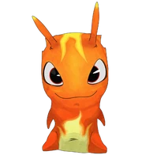
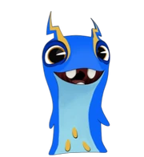

Babosas Mas Conocidas

Babosa Infierno
Las babosas Infierno son un tipo muy raro de babosas que son Infierno (slug infernal en España) elemento fuego.

Babosa Electroshock
Las babosas Electroshock son de elemento electricidad. Cuando se usan varias a la vez puede generar un cortocircuito, la más famosa es Joules.

Babosa Sanadora
Las babosas sanadoras(boon doc en ingles),son babosas de elemento luz y de rareza muy poco frecuente.

Babosa Carnero
La babosa Carnero es una babosa común del elemento tierra. Una de las más famosas es Masa.

Babosa Torpedo
Las babosas Infierno son un tipo muy raro de babosas que son Infierno (slug infernal en España) elemento fuego.

Babosa Trilladora
Las trilladoras son azules Elemento metal Slugs. Es la Slug favorita de Sergent Slug, el dueño de Club Slug.